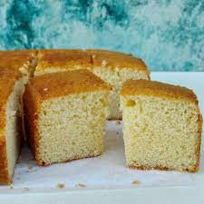

Simple Sponge Cake

Ingredients
- 3 eggs
- 100g castor sugar
- 85g self-raising flour
Notes on ingredients
- Castor sugar
- Finely granulated white sugar
- Self-raising flour
- A pre-mixed combination of flour and leavening agents(usally salt and baking poeder)
Methods
- Preheat the oven to 190oC.
- Grease a 20cm round cake pan
- In a medium bowl, whip together the eggs and castor sugar until fluffy.
- Fold in flour
- Pour mixture into the prepared pan.
- Bake for 20 minutes in the preheated oven,or until the top of the cake springs back when lightly pressed.
- Cool in the pan over a wire rack.